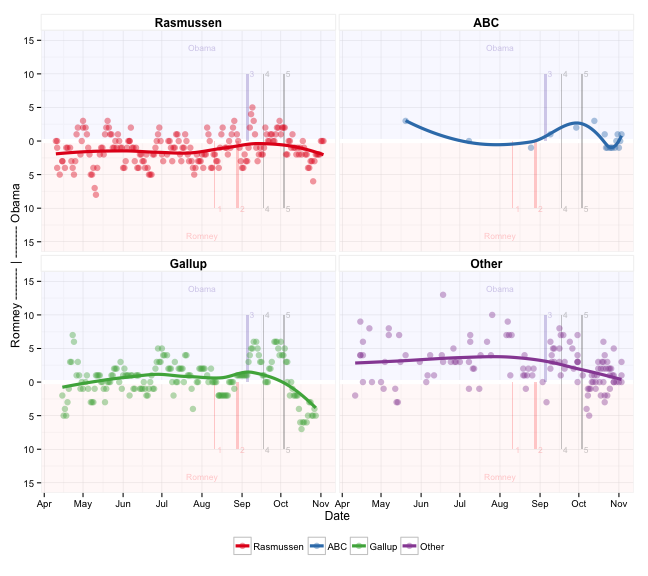

Popular vote
|
 |
|
Tracking polls showing the popular vote, for the major pollsters.
1=Paul Ryan VP pick 2=GOP convention 3=Democratic convention 4=47% video 5=First debate Is there pollster bias??? Each point indicates a tracking poll. Vertically shows the difference in poll results for Obama and Romney. Points above the horizontal 0 line indicate Obama has an advantage, and below indicate a Romney advantage. Horizontally is a time line, running from April until election day. Pollsters who have conducted more than 10 polls are colored, the remaining are a mix of few time pollsters. The line indicates the average of all poll results, within a small time window. The race is pretty tight. Obama had a big boost in polls in the weeks after the Democratic convention. Rather looks like a pollster bias! Gallup appears to be consistently higher than Rasmussen, so Gallup favors Obama, and Rasmussen favors Romney. But, the small time pollsters tend to agree more with Gallup! Sep 5: Ok, I've broken down and added separate smoothers for the pollsters, Rasmussen, Gallup and everyone else. The pollster bias is so great that they cannot be polling from the same population. Sep 23: Using more extensive data from nationalpolls.com, allows us to look at many more polls, and pollsters. Oct 19: Gallup's polls now are more in favor of Romney than anyone else. I heard that the methods changed a couple of weeks ago. It looks like these are the results of the likely voter surveys, which according to some sites reflects emotional reactions to events dramatically. In 2008, Gallup's results were extremely varied, and the last couple of weeks look like they are measuring some extremes. They are now very different from the small time pollsters (Other). Why do we plot the difference rather than two separate lines? People have trouble correctly interpreting the difference between two lines, and typically get it wrong. We are interested to know who has the advantage at any particular time, so we plot the difference. |